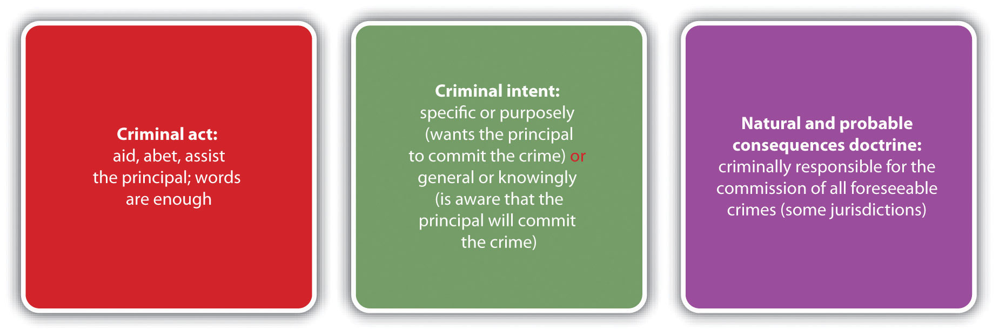

Source: Image courtesy of Jane F. Kardashian, MD.
Congress can impute to a corporation the commission of certain criminal offenses and subject it to criminal prosecution therefor.
New York Central R. Co. v. U.S., cited in Section 7.2.1 "Corporate Liability"
Often more than one criminal defendant plays a role in the commission of a crime. Defendants working together with a common criminal purpose or design are acting with complicityWorking together with a common criminal purpose and design.. When the participation and criminal conduct varies among the defendants, an issue arises as to who is responsible for which crime and to what degree. This chapter analyzes different parties to crime, along with their accompanying criminal liability. Chapter 8 "Inchoate Offenses" examines crimes that necessarily involve more than one person such as conspiracy and solicitation, as well as another inchoate or incomplete crime, attempt.
At early common law, parties to crime were divided into four categories. A principal in the first degreeAt early common law, a defendant who committed a crime with the help of other defendants. actually committed the crime. A principal in the second degreeAt early common law, a defendant who was present at the crime scene and helped a principal in the first degree commit a crime. was present at the scene of the crime and assisted in its commission. An accessory before the factAt early common law, a defendant who was not present at the crime scene and helped a principal in the first degree prepare to commit a crime. was not present at the scene of the crime, but helped prepare for its commission. An accessory after the factAt early common law, a defendant who helped a principal escape or avoid arrest, prosecution for, or conviction of a crime. helped a party to the crime after its commission by providing comfort, aid, and assistance in escaping or avoiding arrest and prosecution or conviction.
In modern times, most states and the federal government divide parties to crime into two categories: principalA defendant who commits a crime with the complicity of other defendants.sCal. Penal Code § 31, accessed December 20, 2010,http://law.onecle.com/california/penal/31.html. and their accomplicesA defendant who helps a principal commit a crime., and accessories.Idaho Code Ann. § 18-205, accessed December 20, 2010, http://www.legislature.idaho.gov/idstat/Title18/T18CH2SECT18-205.htm. The criminal actor is referred to as the principal, although all accomplices have equal criminal responsibility as is discussed in Section 7.1 "Parties to Crime".
An accomplice under most state and federal statutes is responsible for the same crime as the criminal actor or principal.18 U.S.C. § 2, accessed December 20, 2010, http://codes.lp.findlaw.com/uscode/18/I/1/2. However, accomplice liability is derivative; the accomplice does not actually have to commit the crime to be responsible for it. The policy supporting accomplice liability is the idea that an individual who willingly participates in furthering criminal conduct should be accountable for it to the same extent as the criminal actor. The degree of participation is often difficult to quantify, so statutes and cases attempt to segregate blameworthy accomplices based on the criminal act and intent elements, as is discussed in Section 7.1 "Parties to Crime".
In the majority of states and federally, an accomplice must voluntarily act in some manner to assist in the commission of the offense. Some common descriptors of the criminal act element required for accomplice liability are aid, abet, assist, counsel, command, induce, or procure.K.S.A. § 21-3205, accessed December 20, 2010, http://kansasstatutes.lesterama.org/Chapter_21/Article_32/#21-3205. Examples of actions that qualify as the accomplice criminal act are helping plan the crime, driving a getaway vehicle after the crime’s commission, and luring a victim to the scene of the crime. The Model Penal Code defines the accomplice criminal act element as “aids…or attempts to aid such other person in planning or committing [the offense]” (Model Penal Code § 2.06(3) (a) (ii)).
In many states, words are enough to constitute the criminal act element required for accomplice liability.N.Y. Penal Law § 20.00, accessed December 26, 2010, http://law.onecle.com/new-york/penal/PEN020.00_20.00.html. On the other hand, mere presence at the scene of the crime, even presence at the scene combined with flight, is not sufficient to convert a bystander into an accomplice.Commonwealth v. Hargrave, 745 A.2d 20 (2000), accessed December 20, 2010, http://scholar.google.com/scholar_case?case=14481330811091769472&hl=en&as_sdt=2&as_vis=1&oi=scholarr. However, if there is a legal duty to act, a defendant who is present at the scene of a crime without preventing its occurrence could be liable as an accomplice in many jurisdictions.People v. Rolon, 160 Cal. App. 4th 1206 (2008), accessed December 20, 2010, http://caselaw.findlaw.com/ca-court-of-appeal/1308666.html. As the Model Penal Code provides, “[a] person is an accomplice of another person in the commission of an offense if…having a legal duty to prevent the commission of the offense, fails to make proper effect so to do” (Model Penal Code § 2.06(3)(a)(iii)).
Review the criminal law issues example in Chapter 1 "Introduction to Criminal Law", Section 1.2.1 "Example of Criminal Law Issues". In that example, Clara and Linda go on a shopping spree. Linda insists that they browse an expensive department store. After they enter the lingerie department, Linda surreptitiously places a bra into her purse. Clara watches, horrified, but does not say anything, even though a security guard is standing nearby. As Linda and Clara leave the store, an alarm is activated. Linda and Clara run away with the security guard in pursuit. In this case, Clara has probably not committed the criminal act element required for accomplice liability. Although Clara was present at the scene of the crime and did not alert the security guard, mere presence at the scene is not sufficient to constitute the accomplice criminal act. Clara fled the scene when the alarm went off, but presence at the scene of a crime combined with flight is still not enough to comprise the accomplice criminal act. Thus Clara has probably not committed theft as an accomplice, and only Linda is subject to a criminal prosecution for this offense.
Phoebe, the parent of a two-year-old named Eliza, watches silently as her live-in boyfriend Ricky beats Eliza. In Phoebe’s state, parents have a duty to come to the aid of their children if their safety is threatened. Ricky severely injures Eliza, and both Phoebe and Ricky are arrested and charged with battery and child endangerment. Phoebe probably has committed the criminal act element required for accomplice liability in many jurisdictions. Phoebe does not personally act to physically harm her child. However, her presence at the scene combined with a legal duty to act could be enough to make her an accomplice. Thus Phoebe has most likely committed battery and child endangerment as an accomplice, and both she and Ricky are subject to a criminal prosecution for these offenses.
The criminal intent element required for accomplice liability varies, depending on the jurisdiction. In many jurisdictions, the accomplice must act with specific intent or purposely when aiding or assisting the principal.Or. Rev. Stat. § 161.155, accessed December 20, 2010, https://www.oregonlaws.org/ors/161.155. Specific intent or purposely means the accomplice desires the principal to commit the crime. The Model Penal Code follows this approach and requires the accomplice to act “with the purpose of promoting or facilitating the commission of the offense” (Model Penal Code § 2.06(3) (a)). In other jurisdictions, if the crime is serious and the accomplice acts with general intent or knowingly or has awareness that the principal will commit the crime with his or her assistance, intent to further the crime’s commission could be inferred.People v. Lauria, 251 Cal. App. 2d 471 (1967), accessed December 21, 2010, http://scholar.google.com/scholar_case?case=686539897745974621&hl=en&as_sdt=2&as_vis=1&oi=scholarr. In a minority of jurisdictions, only general intent or acting knowingly that the crime will be promoted or facilitated is required, regardless of the crime’s seriousness.Washington Rev. Code Ann. § 9A.08.020 (3) (a), accessed December 21, 2010, http://apps.leg.wa.gov/rcw/default.aspx?cite=9A.08.020.
Joullian, a hotel owner, rents a hotel room to Winnifred, a prostitute. In a state that requires an accomplice to act with specific intent or purposely, Joullian must desire Winnifred to commit prostitution in the rented room to be Winnifred’s accomplice. Evidence that Joullian stands to benefit from Winnifred’s prostitution, such as evidence that he will receive a portion of the prostitution proceeds, could help prove this intent. If Joullian’s state allows for an inference of specific intent or purposely with serious crimes when an accomplice acts with general intent or knowingly, it is unlikely that prostitution is a felony that would give rise to the inference. If Joullian’s state requires only general intent or knowingly for accomplice liability regardless of the crime’s seriousness, to be deemed an accomplice Joullian must simply be aware that renting Winnifred the room will promote or facilitate the act of prostitution.
Accomplice liability should be imputed only to blameworthy, deserving defendants. However, in some jurisdictions, if the crime the defendant intentionally furthers is related to the crime the principal actually commits, the defendant is deemed an accomplice. As with legal causation, discussed in Chapter 4 "The Elements of a Crime", foreseeability is the standard. Under the natural and probable consequences doctrineA doctrine that some jurisdictions follow holding an accomplice criminally responsible for all crimes the principal commits that are foreseeable when the accomplice assists the principal., if the defendant assists the principal with the intent to further a specific crime’s commission, and the principal commits a different crime that is foreseeable at the time of the defendant’s assistance, the defendant could be liable as an accomplice.ME Rev. Stat. Ann. tit. 17-A § 57 (3) (A), accessed December 21, 2010, http://www.mainelegislature.org/legis/statutes/17-a/title17-Asec57.html. Several jurisdictions have rejected this doctrine as an overly harsh extension of accomplice liability.Bogdanov v. People, 941 P.2d 247, 251 n. 8 (1997), accessed December 21, 2010, http://scholar.google.com/scholar_case?case=13910767150180460511&hl=en&as_sdt=2&as_vis=1&oi=scholarr#[8].
José shows up drunk and unruly at his friend Abel’s house and tells Abel he wants to “beat the hell” out of his girlfriend Maria. José asks Abel to drive him to Maria’s house, and Abel promptly agrees. Abel drives José to Maria’s house and waits in the car with the engine running. José forces his way into Maria’s house and then beats and thereafter rapes her. If José and Abel are in a jurisdiction that recognizes the natural and probable consequences doctrine, the trier of fact could find that Abel is an accomplice to the battery, burglary, and rape of Maria. Abel appears to have the criminal intent required to be an accomplice to battery because he assisted José in his quest to beat Maria. If burglary and rape were foreseeable when Abel drove a drunk and angry José to Maria’s house, the natural and probable consequences doctrine would extend Abel’s accomplice liability to these crimes. If Abel is not in a natural and probable consequences jurisdiction, the trier of fact must separately determine that Abel had the criminal intent required to be an accomplice to battery, burglary, and rape; Abel’s intent will be ascertained according to the jurisdiction’s accomplice intent requirement—either specific intent or purposely or general intent or knowingly.
Figure 7.1 Diagram of Accomplice Liability
An accomplice is criminally responsible for the crime(s) the principal commits. Although the sentencing may vary based on a defendant-accomplice’s criminal record or other extenuating circumstances related to sentencing, such as prior strikes, in theory, the accomplice is liable to the same degree as the principal. So if accomplice liability is established in the examples given in Section 7.1.2 "Accomplice Elements"; Phoebe is criminally responsible for battery and child endangerment, Joullian is criminally responsible for prostitution, and Abel is criminally responsible for battery and possibly burglary and rape. The principal should also be criminally responsible for his or her own actions. However, occasionally a situation arises where the principal is not prosecuted or acquitted because of a procedural technicality, evidentiary problems, or a plea bargain, as is discussed in Section 7 "Prosecution of an Accomplice When the Principal Is Not Prosecuted or Is Acquitted".
Although accomplice liability is derivative, in many jurisdictions the trier of fact can determine that a defendant is an accomplice even if the criminal actor or principal is not prosecuted or has been tried and acquitted for the offense.Standefer v. U.S., 447 U.S. 10 (1980), accessed December 22, 2010, http://scholar.google.com/scholar_case?case=11715693283858901517&hl=en&as_sdt=2&as_vis=1&oi=scholarr. Thus a defendant can be liable for a crime even though he or she did not commit it and the defendant who did was spared prosecution or found not guilty. While this situation appears anomalous, if a defendant helps another commit a crime with the intent to further the crime’s commission, punishment for the completed crime is appropriate. As the Model Penal Code states, “[a]n accomplice may be convicted on proof of the commission of the offense and of his complicity therein, though the person claimed to have committed the offense has not been prosecuted or convicted or has been convicted of a different offense or degree of offense…or has been acquitted” (Model Penal Code § 2.06(7)).
Review the example in Section 7 "Example of the Natural and Probable Consequences Doctrine" with José and Abel. Assume that after José burglarizes, beats, and rapes Maria, local police arrest José and Abel. The police transport José and Abel to the police station and take them to separate rooms for interrogation. The police officer who interrogates José is a rookie and forgets to read José his Miranda rights. Thereafter, the police contact Maria, but she refuses to cooperate with the investigation because she fears reprisal from José. The district attorney decides not to prosecute José because of the tainted interrogation. In this case, Abel could still be prosecuted for battery and possibly rape and burglary as an accomplice in some jurisdictions. Although José is the principal and actually committed the crimes, it is not necessary for José to suffer the same criminal prosecution and punishment as Abel. If the elements required for accomplice liability are present, Abel can be fully responsible for the crimes committed by José, whether or not José is prosecuted for or convicted of these offenses.
Attorney: Nancy Garrido in Tears during Sentencing
Phillip Garrido, with his wife Nancy’s help, kidnapped Jaycee Dugard, an eleven-year-old girl, and held her captive for eighteen years. During that time, Dugard was repeatedly raped, became pregnant twice, and gave birth to two children. Phillip Garrido pleaded guilty to multiple charges of rape and kidnapping and received a sentence of four hundred years to life in prison. Nancy was prosecuted as an accomplice, pleaded guilty and received a sentence of thirty-six years to life in prison.Michael Martinez, “Phillip, Nancy Garrido sentenced in Jaycee Dugard Kidnapping,” CNN website, accessed August 15, 2011, http://articles.cnn.com/2011-06-02/justice/california.garridos.sentencing_1_jaycee-dugard-terry-probyn-phillip-garrido?_s=PM:CRIME. Nancy Garrido’s attorney discusses her sentencing as an accomplice in this video:
Ghailani Guilty of One Count
Ahmed Ghailani, an alleged terrorist, was transferred from a military prison in Guantanamo Bay and tried as a civilian in a federal district court in New York. Ghailani was indicted for accomplice liability and conspiracy for the deaths of hundreds of citizens killed during Al Qaeda bombings of US embassies in Nairobi, Kenya, and Tanzania. At trial, the prosecution failed to convince the jury that Ghailani had the criminal intent required for accomplice liability. He was acquitted of the murders and attempted murders as an accomplice and convicted of one conspiracy charge. However, he received a sentence of life in prison without the possibility of parole for the conspiracy charge, the same sentence he would have received if convicted of all the murder and attempted murder charges.Benjamin Weiser, “Ex-Detainee Gets Life Sentence in Embassy Blasts,” New York Times website, accessed January 26, 2011, http://www.nytimes.com/2011/01/26/nyregion/26ghailani.html. A news story on the conviction of Ghailani is shown in this video:
The four parties to crime at early common law were principals in the first degree, principals in the second degree, accessories before the fact, and accessories after the fact. These designations signified the following:
Answer the following questions. Check your answers using the answer key at the end of the chapter.
Vicarious liabilityThe transfer of a defendant’s liability based upon a special relationship., a concept discussed in Chapter 4 "The Elements of a Crime", also transfers liability from one defendant to another. However, vicarious liability should not be confused with accomplice liability. Accomplice liability is based on the defendant’s participation in a criminal enterprise and complicity with the criminal actor or principal, but vicarious liability transfers a defendant’s criminal responsibility for the crime to a different defendant because of a special relationship. With vicarious liability, the acting defendant also is criminally responsible for his or her conduct. Similar to the civil law concept of respondeat superior discussed in Chapter 1 "Introduction to Criminal Law", vicarious liability in criminal law is common between employers and employees. It is also the basis of corporate liabilityThe vicarious liability of a corporation., which is discussed in Section 7.2.1 "Corporate Liability".
At early common law, corporations were not criminally prosecutable as separate entities, which was most likely because in England, corporations were owned and operated by the government. In modern times, American corporations are private enterprises whose actions can seriously injure other individuals and the economy. Thus a corporation can be criminally responsible for conduct apart from its owners, agents, or employees.New York Central R. Co. v. U.S., 212 U.S. 481 (1909), accessed December 21, 2010, http://supreme.justia.com/us/212/481. In general, this is a vicarious liability, transferring criminal responsibility for an offense from an agent or employee of the corporation to the corporation itself, based on the employment relationship. Of course, the agent or employee also is responsible for the crime he or she commits.
A corporation is vicariously liable only if an agent or employee commits a crime during the agent or employee’s scope of employment.720 ILCS § 5/5-4, accessed December 26, 2010, http://law.onecle.com/illinois/720ilcs5/5-4.html. As the Model Penal Code states, “[a] corporation may be convicted of the commission of an offense if…the conduct is performed by an agent of the corporation acting in behalf of the corporation within the scope of his office or employment” (Model Penal Code § 2.07(1)(a)). The criminal punishment for a corporation is generally payment of a fine.
Harry, an employee of Burger King Corporation, shreds corporate documents in his office when Burger King is sued civilly for sexual harassment in a multimillion-dollar class action suit. Under modern theories of corporate liability, both Harry and Burger King could be criminally prosecuted for obstruction of justice. Note that Burger King’s liability is vicarious and depends on its relationship with Harry as an employer and the fact that Harry is acting within the scope of employment. Vicarious liability is distinguishable from accomplice liability, where the accomplice must be complicit with the criminal actor. The owners of Burger King, who are the corporate shareholders, did not actively participate in Harry’s conduct, although they will share in the punishment if the corporation is fined.
Figure 7.2 Vicarious and Corporate Liability
Generally speaking, criminal law disfavors criminal vicarious liability, the exception being corporate liability discussed in Section 7.2.1 "Corporate Liability". Criminal vicarious liability violates the basic precept that individuals should be criminally accountable for their own conduct, not the conduct of others.State v. Akers, 400 A.2d 38 (1979), accessed December 26, 2010, http://scholar.google.com/scholar_case?case=12639244883487184852&hl=en&as_sdt=2&as_vis=1&oi=scholarr. Although accomplice liability appears to hold an accomplice responsible for principals’ conduct, in reality the accomplice is committing a criminal act supported by criminal intent and is punished accordingly. In addition, other statutes that appear to impose criminal liability vicariously are actually holding individuals responsible for their own criminal conduct. Some examples are statutes holding parents criminally responsible when their children commit crimes that involve weapons belonging to the parents, and offenses criminalizing contributing to the delinquency of a minor. In both of these examples, the parents are held accountable for their conduct, such as allowing children to access their guns or be truant from school. The law is evolving in this area because the incidence of juveniles committing crimes is becoming increasingly prevalent.
Answer the following questions. Check your answers using the answer key at the end of the chapter.
Is a Corporation Criminally Accountable When Its Employees Are Not?
Read Commonwealth v. Life Care Centers of America, Inc., 456 Mass. 826 (2010). The case is available at this link: http://scholar.google.com/scholar_case?case=12168070317136071651&hl=en&as_sdt=2&as_vis=1&oi=scholarr. In Life Care Centers, a resident of the Life Care Center nursing home died in 2004 from injuries sustained when she fell down the front stairs while attempting to leave the facility in her wheelchair. The resident could try to leave the facility because she was not wearing a prescribed security bracelet that both set off an alarm and temporarily locked the front doors if a resident approached within a certain distance of those doors. The defendant, Life Care Centers of America, Inc., a corporation that operates the nursing home, was indicted for involuntary manslaughter and criminal neglect.Garrett G. Gillespie, Kristen S. Scammon, “SJC Limits Corporate Criminal Liability,” Martindale.com website, accessed January 24, 2011, http://www.martindale.com/corporate-law/article_Mintz-Levin-Cohn-Ferris-Glovsky-Popeo-PC_1047124.htm. The criminal intent element required for involuntary manslaughter and criminal neglect in Massachusetts is reckless intent. The evidence indicated that the order requiring the victim to wear a security bracelet was negligently edited out of the victim’s treatment sheet, based on the actions of more than one employee. The individual employee who left the victim near the stairs without the security bracelet relied on the orders that did not indicate a need for the bracelet. There was no evidence that any individual employee of Life Care Centers of America, Inc. was reckless. The prosecution introduced a theory of “collective knowledge” of the actions or failure to act of the corporation’s employees. The prosecution’s premise was that the several individual instances of negligent conduct combined to create reckless conduct that could be imputed to the corporation vicariously. The Massachusetts Supreme Court unanimously held that the corporation could not be held criminally responsible unless one individual employee could be held criminally responsible.Commonwealth v. Life Care Centers of America, Inc., 456 Mass. 826 (2010), accessed January 24, 2011, http://scholar.google.com/scholar_case?case=12168070317136071651&hl=en&as_sdt=2&as_vis=1&oi=scholarr.
Check your answer using the answer key at the end of the chapter.
As stated in Section 7.1.1 "Accomplice Liability", at early common law, a defendant who helped plan the offense but was not present at the scene when the principal committed the crime was an accessory before the fact. A defendant who helped the principal avoid detection after the principal committed the crime was an accessory after the fact. In modern times, an accessory before the fact is an accomplice, and an accessory after the fact is an accessoryA defendant who helps a principal escape or avoid arrest, prosecution for, or conviction of a crime., which is a separate and distinct offense. Some states still call the crime of accessory “accessory after the fact”Mass. Gen. Laws ch. 274 § 4, accessed January 16, 2011, http://law.onecle.com/massachusetts/274/4.html. or “hindering prosecution.”Haw. Rev. Stat. § 710-1030, accessed January 26, 2011, http://law.justia.com/codes/hawaii/2009/volume-14/title-37/chapter-710/hrs-0710-1030-htm/.
The difference between an accomplice and an accessory is crucial. An accomplice is responsible for the offense the principal commits. An accessory, on the other hand, is guilty of a separate crime that is almost always a misdemeanor.
The criminal act element required for an accessory in the majority of jurisdictions is aiding or assisting a principal in escape, concealment, or evasion of arrest and prosecution or conviction after the principal commits a felony.Va. Code Ann. § 18.2-19, accessed December 26, 2010, http://law.onecle.com/virginia/crimes-and-offenses-generally/18.2-19.html. In most states, a defendant cannot be an accessory to a misdemeanor, although in some states a defendant can be an accessory to a high-level or gross misdemeanor.N.R.S. § 195.030, accessed December 26, 2010, http://law.onecle.com/nevada/crimes/195.030.html. In a minority of states, the defendant can be an accessory to any crime.Haw. Rev. Stat. § 710-1030, accessed October 10, 2011, http://www.capitol.hawaii.gov/hrscurrent/Vol14_Ch0701-0853/HRS0710/HRS_0710-1030.htm.
In many states, words are enough to constitute the accessory criminal act element.Minn. Stat. Ann. § 609.495, accessed December 23, 2010, https://www.revisor.mn.gov/statutes/?id=609.495&year=2010. Often special categories of individuals are exempted from liability as an accessory, typically family members by blood or marriage.Vt. Stat. Ann. tit. 13 § 5, accessed December 23, 2010, http://www.leg.state.vt.us/statutes/fullchapter.cfm?Title=13&Chapter=001.
Jim wakes up late at night to the sound of someone pounding on his door. He gets out of bed, walks down the stairs, and opens the door. His father James is on the doorstep. James’s eyes are bloodshot and he is swaying slightly on his feet. He tells Jim that he just got into a car accident and needs to come inside before the police find out about it and begin an investigation. Jim steps aside and lets his father enter the house. The smell of alcohol on his father’s breath is apparent. He thereafter allows his father to spend the night without contacting the police about the accident.
Jim has probably committed the criminal act element required for an accessory in many jurisdictions. Jim allowed his father to escape arrest and evade an alcohol screening after leaving the scene of a car accident, which is most likely felony drunk driving and hit and run. He also sheltered his father for the night, concealing him from law enforcement. If Jim is in a state that exempts family members from accessory liability, he may not be subject to prosecution because the principal to the crime(s) is his father. If Jim is not in a state that relieves family members from accessory liability, he could be fully prosecuted for and convicted of this offense.
Figure 7.3 Crack the Code

The criminal intent element required for an accessory has two parts. First, the defendant must act with general intent or knowingly or awareness that the principal committed a crime. Second, the defendant must help or assist the principal escape or evade arrest or prosecution for and conviction of the offense with specific intent or purposely.Mass. Gen. Laws ch. 274 § 4, accessed December 26, 2010, http://law.onecle.com/massachusetts/274/4.html.
Review the example with Jim and James given in Section 7 "Example of Accessory Act". In this case, Jim is aware that James committed a crime because James told Jim he got into an accident and James’s intoxicated condition was apparent. Nonetheless, Jim purposely helped James evade arrest and an alcohol screening by sheltering him in his home while the effects of the alcohol dissipated. Thus Jim probably has the criminal intent required for liability as an accessory in most jurisdictions. If Jim is not in a state that exempts family members from accessory liability, he could be fully subject to prosecution for and conviction of this offense.
As stated in Section 7.3 "Accessory", in many jurisdictions accessory is an offense that is graded less severely than the crime committed by the principal. Accessory is typically graded as a misdemeanor,Haw. Rev. Stat. § 710-1030, accessed January 9, 2011, http://law.justia.com/codes/hawaii/2009/volume-14/title-37/chapter-710/hrs-0710-1030-htm/. although in some jurisdictions it is graded as a felony.Idaho Code Ann. § 18-206, accessed January 9, 2011, http://www.legislature.idaho.gov/idstat/Title18/T18CH2SECT18-206.htm.
Table 7.1 Comparison of Accomplice, Accessory, and Vicarious Liability
| Type of Liability | Criminal Act | Criminal Intent |
|---|---|---|
| Accomplice | Aid, assist commission of a crime | Specific or purposely, or general or knowingly, depending on the jurisdiction |
| Accessory | Aid, assist evasion of prosecution or conviction for a felony, high-level misdemeanor, or any crime | General or knowingly (crime committed) plus specific or purposely (principal evades prosecution or conviction) |
| Vicarious | Committed by an individual in a special relationship with the defendant | Belongs to an individual in a special relationship with the defendant |
Figure 7.4 Diagram of Parties to Crime

The criminal intent element required for an accessory has two parts. The defendant must act
Answer the following questions. Check your answers using the answer key at the end of the chapter.
Often more than one criminal defendant participates in the commission of a crime. Defendants working together with a common criminal purpose are acting with complicity and are responsible for the same crimes, to the same degree.
At early common law, there were four parties to a crime. A principal in the first degree actually committed the crime. A principal in the second degree was present at the crime scene and assisted in the crime’s commission. An accessory before the fact was not present at the crime scene but helped prepare for the crime’s commission. An accessory after the fact helped a party after he or she committed a crime by providing aid in escaping or avoiding arrest and prosecution or conviction. In modern times, there are only two parties to a crime: a principal, who is in the same category with his or her accomplice(s), and accessory(ies). Principals actually commit the crime, and they and their accomplices are criminally responsible for it. Accessories play the same role as accessories after the fact at common law.
The criminal act element required to be an accomplice in most jurisdictions is assistance in the commission of a crime. Words are enough to constitute the accomplice criminal act. Mere presence at the scene, even presence at the scene combined with flight after the crime’s commission, is not enough to constitute the accomplice criminal act unless there is a legal duty to act.
The criminal intent element required for accomplice liability in many jurisdictions is specific intent or purposely to commit the crime at issue. In some states, general intent or knowingly that the principal will commit the crime creates an inference of intent if the offense is serious. In a minority of jurisdictions, general intent or knowingly that the principal will commit the crime is sufficient.
The natural and probable consequences doctrine holds accomplices criminally responsible for all crimes the principal commits that are reasonably foreseeable. In many jurisdictions an accomplice can be prosecuted for a crime the principal commits even if the principal is not prosecuted or acquitted.
Vicarious liability transfers criminal responsibility from one party to another because of a special relationship. Vicarious liability is common between employers and employees and is the basis for corporate criminal liability. Pursuant to modern corporate criminal liability, a corporation can be fined for a crime(s) a corporate agent or employee commits during the scope of employment. The corporate agent or employee also is criminally responsible for his or her conduct. In general, the law disfavors individual criminal vicarious liability. The law in this area is evolving as the incidence of juveniles committing crimes increases.
In modern times, an accessory is the equivalent of an accessory after the fact at common law. The criminal act element required for an accessory is providing assistance to a principal in escape, avoiding detection, or arrest and prosecution, or conviction for the commission of a felony, high-level misdemeanor, or any crime, depending on the jurisdiction. Words are enough to constitute the accessory criminal act. Several jurisdictions exempt family members from criminal responsibility for acting as an accessory.
The criminal intent element required for an accessory in most jurisdictions is general intent or knowingly that the principal committed a crime, and specific intent or purposely that the principal escape, avoid detection, or arrest and prosecution, or conviction for the offense. Accessory is a separate crime that is usually graded as a misdemeanor, although some jurisdictions grade accessory as a felony.
You are a law professor searching for cases to illustrate certain legal concepts for your students. Read the prompt, review the case, and then decide which legal concept it represents. Check your answers using the answer key at the end of the chapter.
From Section 7.1 "Parties to Crime"
From Section 7.2 "Vicarious Liability"